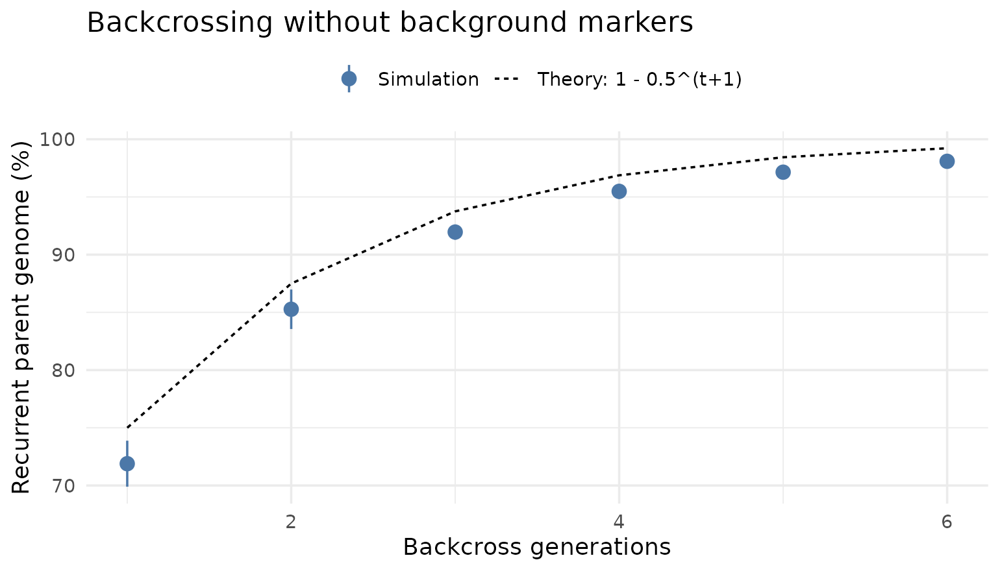
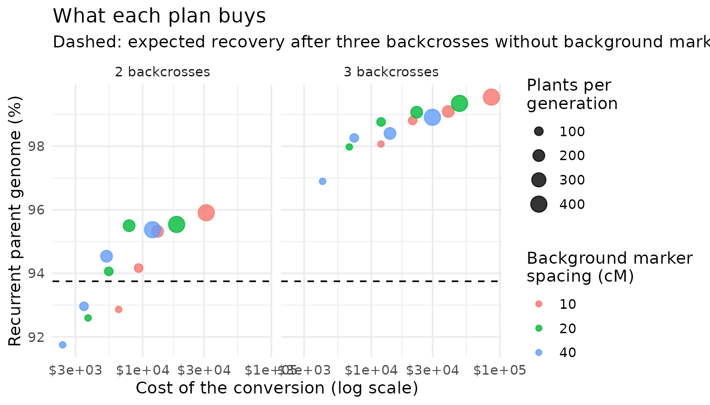
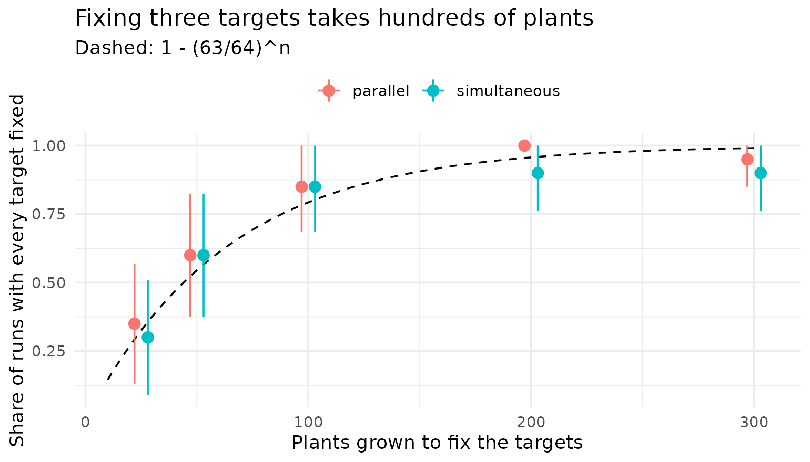
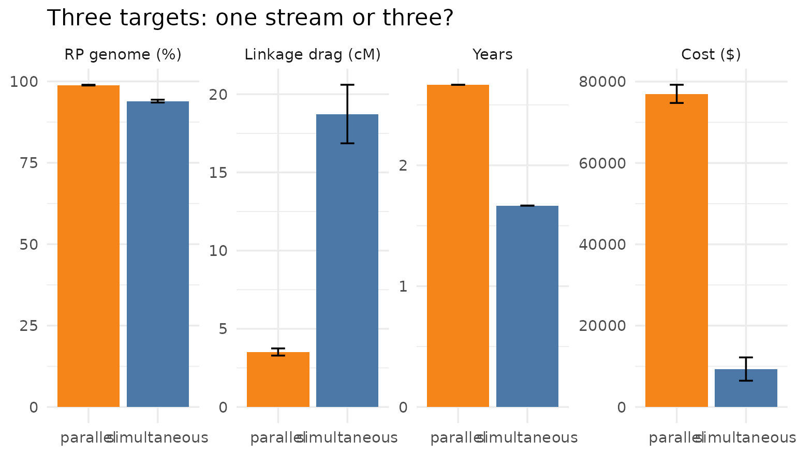

Backcrossing moves one gene, or a few, from a donor into an elite variety, the recurrent parent (RP). Cross the two, then cross the offspring back to the RP again and again. Each backcross halves what is left of the donor’s genome, except near the gene you are keeping. Markers speed this up in three ways:
- Foreground selection keeps only plants that carry the target allele.
- Recombinant selection picks plants whose markers on either side of the target (the flanking markers) already came from the RP. This cuts away linkage drag: the donor segment that travels with the target.
- Background selection picks, among the rest, the plants with the most RP alleles at markers across the genome.
Each choice costs plants and genotyping, and saves generations. How
many plants per generation, how close the flanking markers, how many
background markers, and how many backcrosses? With several targets, do
you bring them in together or in separate streams that you combine at
the end? Those are the questions backcross_program()
answers.
The textbook answer, and what it leaves out
Without markers, each backcross halves the donor share, so after
t backcrosses the expected RP genome is 1 − 0.5^(t+1).
bc_expected_recovery() gives that number. Let’s check it
against a simulation with no background selection
(bg_spacing = Inf) and no flanking markers
(flank_cM = Inf), just foreground selection for one gene on
a 20-chromosome genome:
no_markers <- backcross_program(bc_generations = tune(), bg_spacing = Inf, flank_cM = Inf)
res <- tune_grid(no_markers, sim_replicates(20, seed = 1), grid = data.frame(bc_generations = 1:6))
recovery <- collect_metrics(res, type = "wide")
recovery$theory <- 100 * bc_expected_recovery(recovery$bc_generations)
recovery[, c("bc_generations", "rp_recovery", "theory", "linkage_drag")]
#> # A tibble: 6 × 4
#> bc_generations rp_recovery theory linkage_drag
#> <int> <dbl> <dbl> <dbl>
#> 1 1 71.9 75 78.7
#> 2 2 85.3 87.5 62.0
#> 3 3 92.0 93.8 50.8
#> 4 4 95.5 96.9 37
#> 5 5 97.1 98.4 28.7
#> 6 6 98.1 99.2 25.8
ggplot(recovery, aes(bc_generations)) +
geom_line(aes(y = theory, linetype = "Theory: 1 - 0.5^(t+1)")) +
geom_pointrange(aes(y = rp_recovery, ymin = rp_recovery - 2 * rp_recovery_se,
ymax = rp_recovery + 2 * rp_recovery_se, linetype = "Simulation"), colour = "#4C78A8") +
labs(x = "Backcross generations", y = "Recurrent parent genome (%)", linetype = NULL,
title = "Backcrossing without background markers") +
theme(legend.position = "top")
The simulation runs a little below theory, and the
linkage_drag column says why. Selection for the target also
keeps the donor DNA around it, and that segment shrinks much more slowly
than the rest of the donor genome: it is still about 51 cM long after
three backcrosses (see Hospital, 2001, for the theory). The theory is
right for every chromosome except the one you care about most.
One gene: flanking markers and background selection
Now turn the markers on. First the flanking markers. Moving them closer to the target shortens the donor segment, but double recombinants (one on each side) are rarer the closer the markers are:
flanks <- backcross_program(flank_cM = tune(), n_plants = 200)
res_flank <- tune_grid(flanks, sim_replicates(20, seed = 1), grid = data.frame(flank_cM = c(2, 5, 10, 20, 40)))
collect_metrics(res_flank, type = "wide")[, c("flank_cM", "linkage_drag", "linkage_drag_se", "rp_recovery")]
#> # A tibble: 5 × 4
#> flank_cM linkage_drag linkage_drag_se rp_recovery
#> <dbl> <dbl> <dbl> <dbl>
#> 1 2 2.22 1.16 98.8
#> 2 5 4.25 0.435 99.0
#> 3 10 7.75 0.502 99.0
#> 4 20 13.0 1.85 99.0
#> 5 40 21.2 2.25 98.8Close markers cut the drag from tens of cM to a few. With 200 plants per generation there are enough recombinants that close markers cost little else. With fewer plants, the program may not find a plant recombinant on both sides and has to settle for the next best (the simulator does this the way a breeder would).
Next, the big trade: plants per generation, background marker density
and backcross generations, against genotyping cost. Every plant costs 2
dollars to grow and every marker data point costs 1 dollar, and three
generations fit in a year (generations_per_year = 3).
Change these in backcross_program() to match your
program.
plan <- backcross_program(n_plants = tune(), bg_spacing = tune(), bc_generations = tune(), flank_cM = 5)
designs <- expand.grid(n_plants = c(50L, 100L, 200L, 400L), bg_spacing = c(10, 20, 40),
bc_generations = 2:3)
res_plan <- tune_grid(plan, sim_replicates(15, seed = 2), grid = designs)
m <- collect_metrics(res_plan, type = "wide")
m$label <- paste0(m$bc_generations, " backcrosses")
ggplot(m, aes(cost, rp_recovery, colour = factor(bg_spacing), size = n_plants)) +
geom_point(alpha = 0.8) +
geom_hline(yintercept = 100 * bc_expected_recovery(3), linetype = 2) +
facet_wrap(~label) +
scale_x_log10(labels = function(x) paste0("$", format(x, big.mark = ","))) +
scale_size_area(max_size = 5) +
labs(x = "Cost of the conversion (log scale)", y = "Recurrent parent genome (%)",
colour = "Background marker\nspacing (cM)", size = "Plants per\ngeneration",
title = "What each plan buys",
subtitle = "Dashed: expected recovery after three backcrosses without background markers")
Background selection lets you stop early. Two backcrosses with 200 or more plants recover about 95% RP genome, more than three backcrosses without background markers (the dashed line). In this program, though, an extra backcross is cheap. At three generations a year it costs four months, and three backcrosses with only 50 plants recover more than any two-backcross plan, for less money. More plants and denser markers give diminishing returns: 400 plants with markers every 10 cM is the costliest plan here, and recovers only about one and a half points more than 50 plants with markers every 20 cM. Whether saving a generation is worth the money depends on what four months are worth to your program (the winter nursery article works through that question).
To pick a plan, state the goal and find the cheapest design that meets it. For example, at least 97% RP genome and less than 10 cM of drag:
show_best(res_plan, metric = "cost", constraints = list(rp_recovery = 97, linkage_drag = 10), n = 3)
#> # A tibble: 3 × 8
#> bc_generations n_plants bg_spacing .metric mean n std_err .config
#> <int> <int> <dbl> <chr> <dbl> <int> <dbl> <chr>
#> 1 3 50 20 cost 6740 15 311. Config017
#> 2 3 100 40 cost 7356. 15 288. Config022
#> 3 3 50 10 cost 11876 15 577. Config013show_best() treats each constraint according to the
metric’s direction, so rp_recovery = 97 means at least 97
and linkage_drag = 10 at most 10. To see every trade-off at
once, ask for the Pareto front of recovery against cost:
pareto_front(res_plan, metrics = c("rp_recovery", "cost"))[, c("n_plants", "bg_spacing", "bc_generations",
"rp_recovery", "cost")]
#> # A tibble: 11 × 5
#> n_plants bg_spacing bc_generations rp_recovery cost
#> <int> <dbl> <int> <dbl> <dbl>
#> 1 50 40 2 91.8 2381.
#> 2 100 40 2 93.0 3489.
#> 3 50 40 3 96.9 4172
#> 4 50 20 3 98.0 6740
#> 5 100 40 3 98.3 7356.
#> 6 100 20 3 98.8 11907.
#> 7 100 10 3 98.8 20955.
#> 8 200 20 3 99.1 22532
#> 9 200 10 3 99.1 39660
#> 10 400 20 3 99.3 48536.
#> 11 400 10 3 99.5 85896.Frisch, Bohn and Melchinger (1999) compared selection strategies like
these by simulation, and backcross_program() uses the
staged order they studied to save markers. Every plant is genotyped at
the target, carriers are genotyped at the flanks, and only the best
recombinants are genotyped in the background.
Several genes at once
Bringing in several targets is where planning matters most, because the number of plants needed grows fast. A plant heterozygous for three unlinked targets produces a selfed offspring homozygous for all three only once in 4³ = 64. To find at least one such plant with 99% certainty you need
min_population_size(1 / 64, prob = 0.99)
#> [1] 293plants, against 17 for a single target.
min_population_size() works this out for any frequency.
Two strategies are common (Peng, Sun and Mumm, 2014a, b):
- Simultaneous: one backcross stream that selects for every target at once, then a final self to fix them.
- Parallel: one stream per target, each fixed separately, then the converted lines are crossed in pairs (a pyramiding tree) and the pyramid fixed at the end.
three <- backcross_program(
strategy = tune(), fix_plants = tune(), flank_cM = 5,
targets = data.frame(chr = c(1, 3, 5), pos = c(50, 30, 90))
)
res_multi <- tune_grid(three, sim_replicates(20, seed = 3),
grid = expand.grid(strategy = c("simultaneous", "parallel"),
fix_plants = c(25L, 50L, 100L, 200L, 300L),
stringsAsFactors = FALSE))
mm <- collect_metrics(res_multi, type = "wide")
theory <- data.frame(fix_plants = 10:300)
theory$success <- 1 - (63 / 64)^theory$fix_plants
ggplot(mm, aes(fix_plants, success, colour = strategy)) +
geom_line(data = theory, aes(colour = NULL), linetype = 2) +
geom_pointrange(aes(ymin = pmax(success - 2 * success_se, 0), ymax = pmin(success + 2 * success_se, 1)),
position = position_dodge(width = 12)) +
labs(x = "Plants grown to fix the targets", y = "Share of runs with every target fixed", colour = NULL,
title = "Fixing three targets takes hundreds of plants",
subtitle = "Dashed: 1 - (63/64)^n") +
theme(legend.position = "top")
Both strategies need about 300 plants in the last self, as the formula says. The parallel strategy also grows a plant population for each target’s own fixing and for each pyramiding cross, so it uses more plants and takes longer. What does it buy?
both <- mm[mm$fix_plants == 300, ]
both[, c("strategy", "success", "rp_recovery", "linkage_drag", "years", "plants", "datapoints", "cost")]
#> # A tibble: 2 × 8
#> strategy success rp_recovery linkage_drag years plants datapoints cost
#> <chr> <dbl> <dbl> <dbl> <dbl> <dbl> <dbl> <dbl>
#> 1 simultaneous 0.9 93.9 18.7 1.67 601 8121. 9323.
#> 2 parallel 0.95 98.9 3.52 2.67 2201 72592. 76994.
long <- do.call(rbind, lapply(c("rp_recovery", "linkage_drag", "years", "cost"), function(k) {
data.frame(strategy = both$strategy, measure = k, value = both[[k]], se = both[[paste0(k, "_se")]])
}))
long$measure <- factor(long$measure, levels = c("rp_recovery", "linkage_drag", "years", "cost"),
labels = c("RP genome (%)", "Linkage drag (cM)", "Years", "Cost ($)"))
ggplot(long, aes(strategy, value, fill = strategy)) +
geom_col(show.legend = FALSE) +
geom_errorbar(aes(ymin = value - se, ymax = value + se), width = 0.2) +
facet_wrap(~measure, scales = "free_y", nrow = 1) +
scale_fill_manual(values = c("#F58518", "#4C78A8")) +
labs(x = NULL, y = NULL, title = "Three targets: one stream or three?")
Each parallel stream only has to select for one target, so it can spend its plants on recombinant and background selection instead. The result is a cleaner conversion: more RP genome and less drag. It costs about a year more and several times the plants and data points. Simultaneous conversion is quicker and cheaper, and the RP genome it recovers is closer to the no-marker curve, because selecting for three targets at once leaves few plants for background selection. Which matters more depends on how close the final line has to be to the RP, for example whether it must perform like the elite variety in trials without further selection.
Make it yours
-
Your genome and targets. Set
n_chromosomes,chromosome_lengthandtargetsfor your crop. Soybean has 20 chromosomes of roughly 100 to 150 cM. Put two targets on the same chromosome to see how linkage changes the picture. -
Your costs and calendar. Set
plant_cost,datapoint_costandgenerations_per_year(a winter nursery or greenhouse adds generations). -
Search instead of a grid. With many settings, use
tune_bayes()with constraints, for example to maximizerp_recoveryat a cost below a budget. -
Your own scheme.
backcross_program()covers the two textbook strategies. A scheme it does not cover, such as backcrossing into a population rather than a single line, can be written withalphasim_program(), and compared with this one in asim_set().
Further reading
The design questions in this article follow a long line of theory and simulation papers:
- Hospital F, Chevalet C, Mulsant P (1992). Using markers in gene introgression breeding programs. Genetics 132:1199–1210. doi:10.1093/genetics/132.4.1199
- Hospital F, Charcosset A (1997). Marker-assisted introgression of quantitative trait loci. Genetics 147:1469–1485. doi:10.1093/genetics/147.3.1469
- Frisch M, Bohn M, Melchinger AE (1999). Comparison of selection strategies for marker-assisted backcrossing of a gene. Crop Science 39:1295–1301.
- Hospital F (2001). Size of donor chromosome segments around introgressed loci and reduction of linkage drag in marker-assisted backcross programs. Genetics 158:1363–1379. doi:10.1093/genetics/158.3.1363
- Frisch M, Melchinger AE (2005). Selection theory for marker-assisted backcrossing. Genetics 170:909–917. doi:10.1534/genetics.104.035451
- Ishii T, Yonezawa K (2007). Optimization of the marker-based procedures for pyramiding genes from multiple donor lines: I–III. Crop Science 47.
- Peng T, Sun X, Mumm RH (2014a). Optimized breeding strategies for multiple trait integration: I. Minimizing linkage drag in single event introgression. Molecular Breeding 33:89–104. doi:10.1007/s11032-013-9936-7
- Peng T, Sun X, Mumm RH (2014b). Optimized breeding strategies for multiple trait integration: II. Process efficiency in event pyramiding and trait fixation. Molecular Breeding 33:105–115. doi:10.1007/s11032-013-9937-6
- Sun X, Mumm RH (2015). Optimized breeding strategies for multiple trait integration: III. Parameters for success in version testing. Molecular Breeding 35:201. doi:10.1007/s11032-015-0397-z